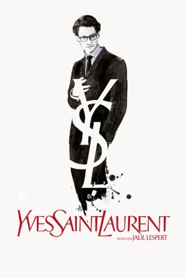

#3164 Yves Saint Laurent
 
 IMDB-Wertung: 6.2 / 10
IMDB-Wertung: 6.2 / 10  Metascore: 51
Metascore: 51 
Paris 1957. Der gerade einmal 21-jährige Yves Saint Laurent ist einer der talentiertesten Nachwuchsdesigner Frankreichs und die rechte Hand des Modeschöpfers Christian Dior. Als dieser unerwartet stirbt, wird Yves künstlerischer Leiter einer der renommiertesten Modemarken der Welt. Seine erste Kollektion, von der Welt der Haute Couture mit großer Skepsis erwartet, wird für den jungen, genialen Modeschöpfer zu einem triumphalen Erfolg und macht ihn über Nacht weltberühmt. Während einer Modenschau trifft der schüchterne Yves Saint Laurent auf Pierre Bergé, eine Begegnung, die sein Leben von Grund auf verändern wird. Die beiden werden Lebens- und Geschäftspartner und gründen keine drei Jahre später unter enormem Risiko ihr eigenes, legendäres Modelabel „Yves Saint Laurent“. Doch Yves Kreativität nimmt über die Jahre immer selbstzerstörerische Züge an, die sowohl seine Beziehung zu Pierre, die Liebe seines Lebens, als auch die Zukunft seines Unternehmens gefährden.
Jahr: 2014
Dauer: 105 Minuten
FSK: 12
Land: Frankreich Studio: Square One EntertainmentTonspuren:
Untertitel:
Auflösung: 720p (1280x536) Größe: 2580 MB
Genre: Drama, Biographie
Regisseur: Jalil Lespert
Drehbuch: Marie-Pierre Huster, Jalil Lespert, Jacques Fieschi, Laurence Benaïm, Jérémie Guez
Soundtrack: Ibrahim Maalouf
Darsteller:
 Pierre Niney als Yves Saint Laurent
Pierre Niney als Yves Saint Laurent Guillaume Gallienne als Pierre Bergé
Guillaume Gallienne als Pierre Bergé Charlotte Le Bon als Victoire Doutreleau
Charlotte Le Bon als Victoire Doutreleau- Laura Smet als Loulou de la Falaise
 Nikolai Kinski als Karl Lagerfeld
Nikolai Kinski als Karl Lagerfeld- Astrid Whettnall als Yvonne de Peyerimhoff
 Xavier Alcan als Financier Rothschild
Xavier Alcan als Financier Rothschild- Annick Christiaens als Journaliste 1 conférence Dior
- Jeanne Dandoy als Journaliste Elle
- Florence Eugene als Amie Betty
- Greg Thoby als Journaliste 3 conférence Dior , uncredited
- Janicke Askevold als Mannequin , uncredited
- Judi Beecher als Journaliste américaine , uncredited
- Aziliz Le Guern als (uncredited
- Aline Nolasco als Mannequin défilé 1958 , uncredited
- Sandra Rosinsky als Mannequin , uncredited
- Marie de Villepin als Betty Catroux
- Ruben Alves als Fernando Sanchez
- Marianne Basler als Lucienne
- Jean-Édouard Bodziak als Bernard Buffet
- Adeline D'Hermy als Anne-Marie Munoz
- Xavier Lafitte als Jacques de Bascher
- Alexandre Steiger als Jean-Pierre Debord
- Philippe Morier-Genoud als Jean Cocteau
- Anne Alvaro als Marie-Louise Bousquet
- Patrice Thibaud als Christian Dior
- Gérard Lartigau als M. Boussac
- Michèle Garcia als Raymonde Zehnacker
- Laura Martin-Bassot als Brigitte
- Olivier Pajot als Charles
- Joakim Latzko als Albert
- Laurent Maria als José Maria
- Arnaud Denis als l'Avocat
- Julien Lacroix als Chef de Service Val de Grâce
- Déborah Amsens als Ouvrière 1 Dior
- Sophie Riffont als Ouvrière 2 Dior
- Laura Giudice als Stagiaire Dior
- Julie Bernard als Journaliste 2 conférence Dior
- Benoît Giros als Maitre d'hôtel Prunier
- Benoît Strulus als Journaliste 1 rue Dior
- Xavier Hosten als Journaliste 3 rue Dior
- Fabienne Chaudat als Dame Dior
- Sandrine Blancke als Journaliste Marie-Claire
- Nicolas Ronchi als Journaliste 1 boutique YSL
- Stéphanie Doncker als Journaliste 2 boutique YSL
- Julien Bruant als Type blouson de cuir
- Christian Gasc als Baron de Rothschild
- Jean-Henri Compère als Type Prunier
- William Abello als Andy Warhol
- Céline Spang als Zizi Jeanmaire
Datei: X:\2014(N-Z)\Yves Saint Laurent (2014, FSK12, 1280x536).mkv seit 07.02.2016
Festplatte: HD 2013(I-Z)-2014(A-Z)
 Es gibt insgesamt 163 Filme in der Gruppe '2014(N-Z)'
Es gibt insgesamt 163 Filme in der Gruppe '2014(N-Z)'